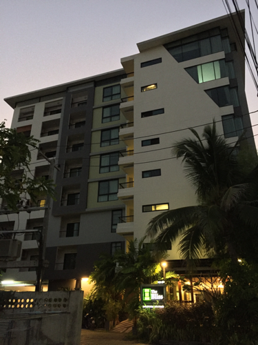

Cheap => High standard of living
Chiang Mai is quite inexpensive, that's why you can easily afford a really comfortable lifestyle including hourly long massages. You never need to do laundry, cook food or clean your appartment by yourself. Read the section "Cost of living report" for detailed information.
Great weather
The average temperature in Chiang Mai is 77F. When the sun is shinning all day, it makes me happy. When I am happy and in good mood, I am more creative and productive. Basically I wake up every morning with a on my face.
Healthy AND affordable food
Most of the Thais are in a pretty good shape because of their healthy food. For 50 Baht/$1.5 you can get a pretty delicious and healthy meal.
Local people are kind-hearted
The locals in Chiang Mai are friendly and laid back. They seem to live more on a day to day basis and just enjoy life as much as possible. They avoid arguments and "smile" all upcoming problems away. I personally feel happy whenever I am interacting with locals.
Great infrastructure
In Chiang Mai there are several Co-working spaces (> 5) with fast and reliable internet. Besides, there are also plenty of beautiful coffee shops (> 25) where you can work as well.
Inspiring Digital Nomad/Entrepreneur community
You think New York City is a great place for networking? Oh boy, you have never been to Chiang Mai… I would argue it's even easier here to connect with other entrepreneurs and Digital Nomads just because they are all at the same places. On top they all WANT to talk to you and exchange stories. Usually you don't exchange business cards but rather blog addresses. So make sure you have one ;-)
Get things done athmosphere
People are here to get things done. Together they create a very creative and motivating athmosphere. If you want, you will always find someone to chat about your recent progress. Afterwards you just go back to work and crush it!
Rent  Hotel I stayed at the Bliss Hotel in a serviced appartment. That means it's like a normal hotel room, but instead of cleaning it everyday they clean it once per week.
Distance to my gym: 400m Distance to my Co-Working space: 400m Distance to healthy and inexpensive food: 400m Distance to dry cleaner: 40m
1 month: 12.000 Baht ea. 3 months: 9000 Baht ea.
Food
As I have already mentioned the local food here is healthy and inexpensive. Mostly it's based on veggies and rice. Food e422b327597050b75e59f4c7ee22963b38bbc3eb8676cefd3d3e1f0fa637fc62 Meal with rice, tofu, tomatos, brokkoli, potatoes and an egg: 60 Baht (see picture)
Phone plan
The digital infrastructre in Chiang Mai is on a western level . I bought a monthly phone plan, which means I can quit each months. I got 12gb highspeed internet for 860 Baht.
Co-working space
There are several Co-working spaces in Chiang Mai. I usually work at C.A.M.P. It's free if you have an AIS phone plan. Camp fe5eedb9f1145df841971b879e367ef820b77600d26adf411c28d02a5e7764bd
Laundry
I usually dropped of my laundry in the morning and got it back in the evening. A medium sized back (clothing of one week) is about 50 Baht.
Massage
Sometimes I just feel like "Jan today you need a massage!". Fortunately it's very affordable. A one hour Thai Massage is about 200 Baht.
Gym
I have chosen a totally overpriced gym (Touch fitness) - just because it is so convenient for me. The gym is in walking distance from my hotel and has a sauna and a steaming room. Besides, all machines are new, the stuff is helpful and it never gets crowded. You pay for what you get: 3000 Baht per month.
Scooter
I personally have only rented a scooter once for 2 days. Everything I need is in walking distance. Whenever I want to go somewhere else I just take a red cab which takes me anywhere for 100 Baht (often way less). In case you want to rent a scooter, estimate around 1000 Baht per week.
Going out
I came to Chiang Mai to get things done, not to go clubbing. So I went clubbing perhaps 3-4 times so far. One night is usually around 500 Baht all in.
In total: 25,480 Baht per month
25,480 Baht = $712.34 (02/02/2016)
25,480 Baht = 653.16 Euro (02/02/2016)
Again the gym is totally overpriced! If you stay for 3 months, it gets even cheaper (rent goes down). In case you spend $1000 Dollar per month, you will live like a king!!!
Whenever you really want to get things done and you have at least two month of free time (because of the flight costs).
Chiang Mai is an awesome place for a team. Actually I have seen quite a lot of startup teams. Go there, have fun and extend your runway!
As always, I would love to hear your feedback!
Shoot me an email: hello@janruettinger.co